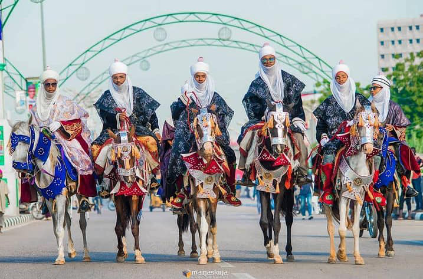
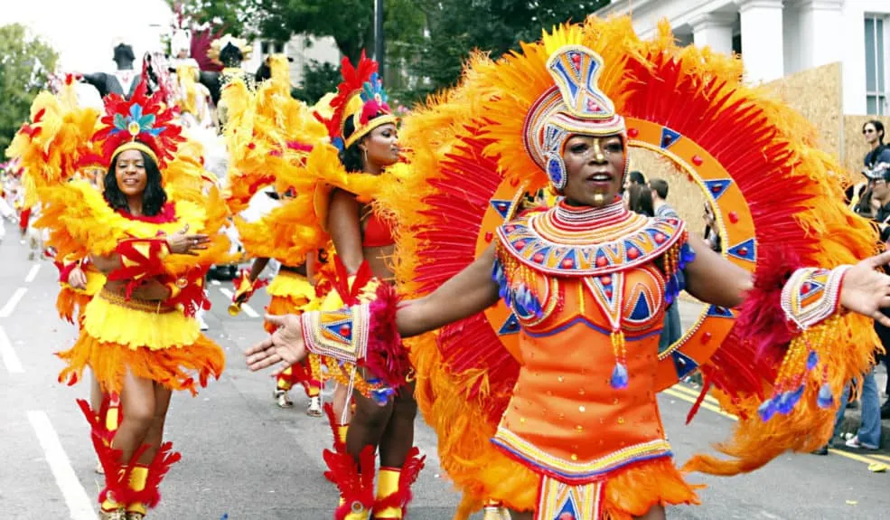
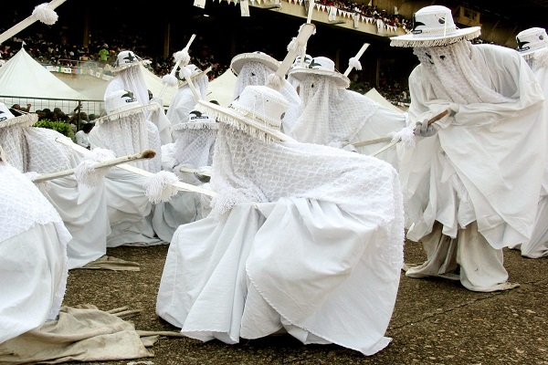

Nigerian Culture & Heritage
A Tapestry of Traditions, Languages, and Celebrations
The Diversity of Nigerian People
Nigeria is home to over 250 ethnic groups, with the three largest being the Hausa-Fulani in the North, the Yoruba in the Southwest, and the Igbo in the Southeast. Each group contributes unique traditions, languages, and customs that make Nigeria one of Africa's most culturally diverse nations.
Traditional Festivals & Celebrations
Nigerian festivals are vibrant expressions of cultural identity, bringing communities together to celebrate heritage, harvest, and spirituality. These colorful events feature traditional music, dance, elaborate costumes, and time-honored rituals.

Durbar Festival
Region: Northern Nigeria (Kano, Katsina)
Time: End of Ramadan and Eid al-Adha
A spectacular display of horsemanship featuring beautifully decorated horses, traditional musicians, and colorful processions celebrating Islamic holidays. The Emir presides over this centuries-old military parade that has transformed into a cultural showcase.

New Yam Festival (Iri Ji)
Region: Southeast Nigeria (Igbo communities)
Time: August
A harvest celebration marking the end of the farming season and the beginning of the new yam harvest. Communities gather to offer thanksgiving, feast on roasted yams, and perform traditional dances. It symbolizes prosperity and continuity of life.

Calabar Carnival
Region: Cross River State
Time: December
Known as "Africa's Biggest Street Party," this month-long festival features spectacular street parades, elaborate costumes, music competitions, and cultural displays. It attracts thousands of visitors from around the world and showcases Nigeria's creative spirit.

Eyo Festival
Region: Lagos Island
Time: Occasional (special occasions)
A mystical celebration where masquerades dressed in flowing white robes and wide-brimmed hats parade through Lagos streets. The Eyo represents the spirits of ancestors and is performed to honor the passing of important chiefs or celebrate significant events.
Music & Entertainment
Nigeria's music scene is globally influential, from traditional drumming to contemporary Afrobeats. Nigerian artists have shaped world music, with genres like Highlife, Juju, Fuji, and Afrobeats gaining international recognition. Nollywood, Nigeria's film industry, is the second-largest in the world by volume.
Traditional Music
Talking drums, sekere shakers, and the melodious sounds of the kora tell stories and communicate across villages. Each ethnic group has distinctive musical styles and instruments.
Afrobeats Revolution
Artists like Burna Boy, Wizkid, Davido, and Tiwa Savage have taken Nigerian music global, blending traditional rhythms with contemporary sounds to create infectious beats heard worldwide.
Nollywood Cinema
Producing over 2,500 films annually, Nollywood tells authentic African stories and has become a major cultural export, entertaining millions across Africa and the diaspora.
Nigerian Cuisine
Nigerian food is bold, flavorful, and diverse. Staples include rice, yam, cassava, and plantain, often served with rich soups and stews made with palm oil, tomatoes, and aromatic spices.